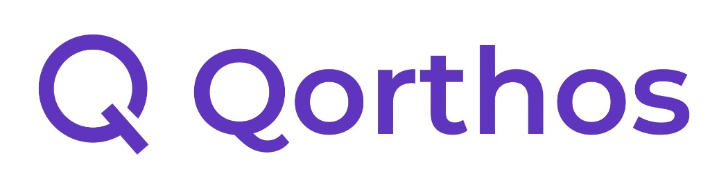
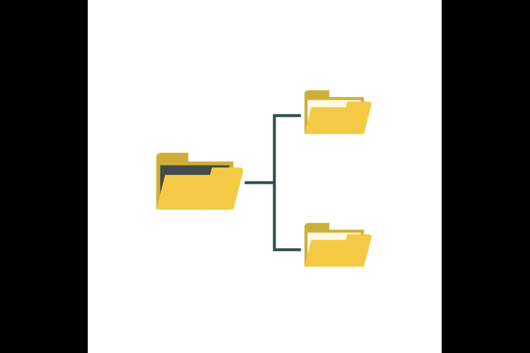
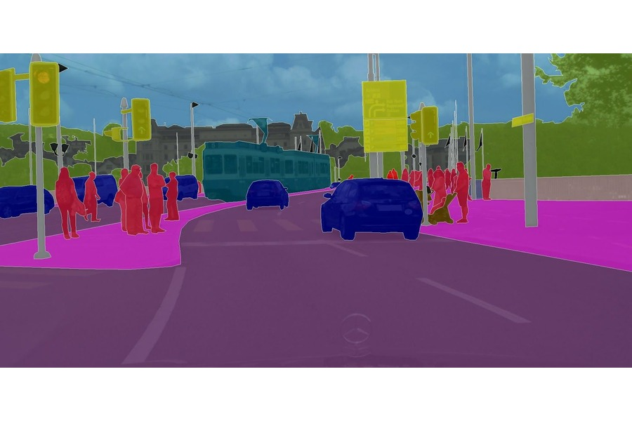
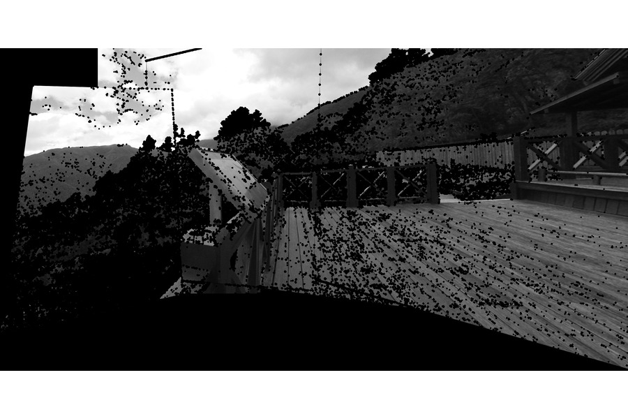

Georgia Institute of Technology
Master of Science, Computer Science (Remote)
I build backend-heavy full-stack products, AI/ML data systems, and developer tools. My work spans React, TypeScript, Python, Java, cloud services, RAG workflows, and trustworthy AI code automation.
I am a Boston-based software engineer focused on backend-heavy full-stack products, AI/ML data systems, and developer tooling. I work across TypeScript, React, Node.js, Python, Java/Spring Boot, SQL, AWS, and LLM workflows, with an emphasis on shipping reliable APIs, dashboards, data pipelines, and AI-assisted automation that people can actually use.
At FL Tech Solutions, I am building GenAI-enabled backend workflows for RAG, tool calling, ticket triage, semantic code search, and support summarization across AWS, PostgreSQL, Redis, S3, and cloud-native services. At NFS Solutions, I worked on ML/data systems contracts spanning React dashboards, Node.js/Flask APIs, SQL-backed analytics services, Python data pipelines, and model-scored customer and campaign workflows. Earlier at EdgeVerve Systems, I worked on Finacle workflow and CRM infrastructure across Java/Spring services, React/JavaScript UI fixes, request filtering, Kubernetes deployments, CSP hardening, and API auditing.
In my free time, I am building Qorthos, a local-first trust and validation runtime for AI-generated code. Qorthos checks agent output against SQL schemas, OpenAPI and GraphQL contracts, gRPC interfaces, infrastructure definitions, migrations, ORM behavior, and business rules, then records reviewable evidence through signed attestations, replay artifacts, trust reports, and MCP/GitHub workflows.
I am interested in software engineering, backend/platform, full-stack, AI engineering, data engineering, and applied ML roles where strong implementation, product judgment, and ownership matter.

Northeastern University - INFO 6105 Data Science
Backend-heavy work across AI tooling, distributed systems, cloud automation, and applied ML.

Qorthos is a local-first trust runtime for AI-generated code. It validates agent output against live SQL schemas, OpenAPI and GraphQL contracts, gRPC interfaces, migrations, ORM behavior, dependencies, and business rules before code reaches review or production. The runtime records MCP tool-call evidence and exports signed attestations, replay artifacts, trust reports, and compliance bundles for GitHub review workflows.

Built a Spring Boot, PostgreSQL, Kafka, and Redis platform handling 50,000+ async jobs daily with retries, dead letter queues, priority scheduling, and automatic failure recovery.
Built a RAG-powered documentation assistant that generates code documentation, processes 500+ requests daily, and uses domain adaptation for Java/Spring Boot projects.
Engineered an AWS authentication and verification system across three availability zones with autoscaling infrastructure, Terraform IaC, and load-balanced Spring Boot services.

Designed a distributed replicated file system with MongoDB-backed storage, version vectors, conflict resolution, faster retrieval, and higher throughput than a single-node baseline.

Implemented domain adaptation and contrastive learning pipelines for semantic segmentation, with work recognized through Springer and IEEE Xplore publications.
Desktop application to track live soccer games from top European leagues, built with Java, JavaFX, and SQLite for a minimal, user-friendly live scores experience.

End-to-end panorama pipeline from multiplanar images using feature detection and homography, with Harris Corner and SIFT via OpenCV in Python.
Simulated complex blockchain environments for Ethereum smart contract testing with a Rust-based framework, cutting development time by more than half.
Peer-reviewed research in computer vision, domain adaptation, and autonomous systems.
Published at IEEE NCC 2022. Co-authored research on contrastive representation learning for improving synthetic-to-real semantic segmentation performance.
Published in Springer CCIS. Co-authored work on perception, segmentation, and scene understanding challenges for autonomous systems in real-world environments.
Master of Science, Computer Science (Remote)
Master of Science, Software Engineering Systems
Bachelor of Technology, Electronics and Communication Engineering
Languages & Version Control: TypeScript, JavaScript, Python, Java, SQL, Bash, HCL, C#, Git.
Frameworks & Libraries: React, Node.js, NestJS, Express, Flask, FastAPI, Spring Boot,
REST APIs, Microservices, PyTorch, TensorFlow.
GenAI & Data: OpenAI API, AWS Bedrock, LangChain, RAG, Vector Search, Pinecone, Neo4j,
PostgreSQL, Redis, Kafka, pandas, NumPy, scikit-learn.
Cloud & DevOps: AWS Lambda, ECS Fargate, S3, SQS, CloudWatch, Docker, Kubernetes,
Terraform, Helm, Jenkins, GCP, GitHub Actions, Oracle Cloud, Linux.